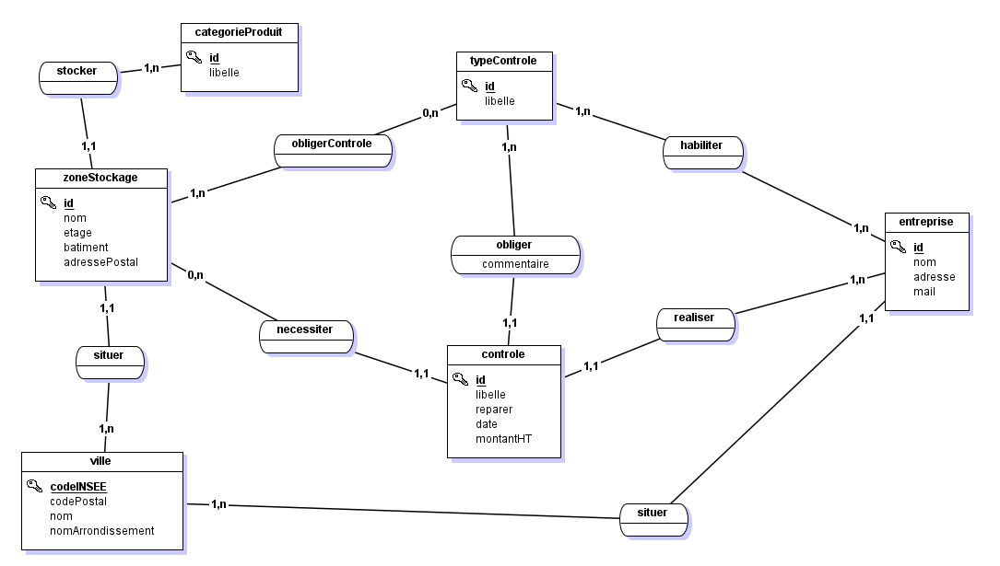
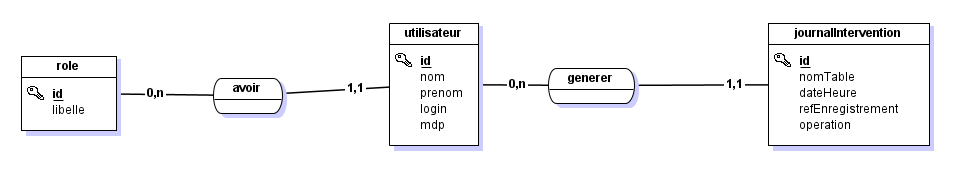
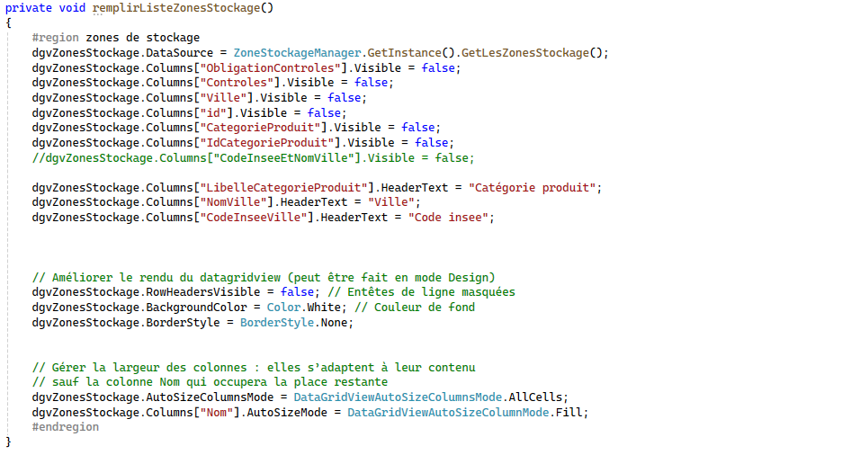
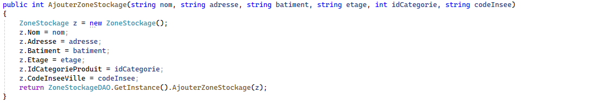

Dotnet : Contrôle des zones de stockage
Contexte
Les médicaments contiennent un principe actif aux effets thérapeutiques et des excipients facilitant leur
mise en forme, goût, stabilité et dissolution.
La réglementation française impose des contrôles réguliers sur la sécurité des zones de stockage des
produits chimiques. GSB, qui stocke substances et médicaments, y est soumise.
Les contrôles effectués sur les zones de stockage permettent d’assurer :
• la bonne conservation des substances et des médicaments (l’humidité de l’air est par exemple un des facteurs de dégradation
des principes actifs des médicaments, par ailleurs beaucoup de principes actifs sont photosensibles
et ne doivent pas être exposés directement à la lumière du jour)
• la sécurité du personnel et des marchandises stockées
• la protection de l’environnement contre des accidents (explosion, incendie, infiltration de produits dangereux dans le sol…)
L’entreprise GSB dispose de plusieurs zones de stockage pour entreposer les médicaments qu’elle fabrique et les substances utilisées
pour les fabriquer (poudre, gaz …). GSB fait appel à des entreprises spécialisées pour ces vérifications.
Environnement technologique :
> Architecture applicative en couches
> .NET Framework / ORM Entity Framework
> Langages : C#, Linq To Entities
> Base de données MS SQLServer
> Github
Compétences
Gérer le patrimoine informatique
▸ Recenser et identifier les ressources numériques▸ Exploiter des référentiels, normes et standards adoptés par le prestataire informatique
▸ Mettre en place et vérifier les niveaux d’habilitation associés à un service
▸ Vérifier le respect des règles d’utilisation des ressources numériques
Travailler en mode projet
▸ Analyser les objectifs et les modalités d’organisation d’un projet▸ Planifier les activités
▸ Évaluer les indicateurs de suivi d’un projet et analyser les écarts
Mettre à disposition des utilisateurs un service informatique
▸ Réaliser les tests d’intégration et d’acceptation d’un serviceAnnexes
MCD


La liste des zones de stockage

L'ajout des zones de stockage

La modification et la suppression
Controle des données
L'architecture